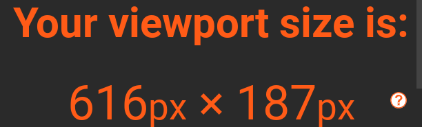

- Aquesta és la relació entre el nombre de píxels físics d'un dispositiu i el nombre de píxels lògics o virtuals utilitzats per representar el contingut a la pantalla
- És important quan es treballa en una web i s'intenta adaptar per a dispositius mòbils
Viewport: és l'àrea visible d'una pàgina web en una pantalla
IMATGE AMB 910px-647px
IMATGE AMB 683px-647px
IMATGE AMB 616px-187px
- Les variacions que s'han fet són clarament visibles en les diferents mides de les imatges, i com aquestes s'ajusten a les nostres necessitats, com quan escribim codi i volem tenir la meitat de la pantalla per l'editor. Així reduïm el Viewport